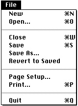

Using Files
This section describes how to perform typical file operations using some of the services provided by the Standard File Package, the File Manager, the Finder, and other system software components. Figure 1-6 shows the typical appearance of an application's
File menu.Figure 1-6 A typical File menu

Note that all the commands in this menu, except for the Quit and Page Setup commands, manipulate files. Your application's File menu should resemble the menu shown in Figure 1-6 as closely as possible. In general, whenever the user creates or manipulates information that is stored in a document, you need to implement all the commands shown in Figure 1-6.
Listing 1-1 shows one way to handle some of the typical commands in a File menu. Most of the techniques described in this section are illustrated by means of definitions of the functions called in Listing 1-1.
- Note
- Some applications allow the user to create or edit information that is not stored in a document. In those cases, it is inappropriate to put the commands that create or manipulate that information in the File menu. Instead, group those commands together in a separate menu.
Listing 1-1 Handling the File menu commands
PROCEDURE DoHandleFileCommand (menuItem: Integer); VAR myErr: OSErr; BEGIN CASE menuItem OF iNew: myErr := DoNewCmd; {create a new document} iOpen: myErr := DoOpenCmd; {open an existing document} iClose: myErr := DoCloseCmd; {close the current document} iSave: myErr := DoSaveCmd; {save the current document} iSaveAs: myErr := DoSaveAsCmd; {save document under new name} iRevert: myErr := DoRevertCmd; {revert to last saved version} OTHERWISE ; END; END;Your application should deactivate any menu commands that do not apply to the frontmost window. For example, if the frontmost window is not a document window belonging to your application, then the Close, Save, Save As, and Revert commands should be dimmed when the menu appears. Similarly, if the document in the frontmost window does belong to your application but contains data that has not changed since it was last saved, then the Save menu command should be dimmed. See "Adjusting the File Menu" on page 1-37 for details on implementing this feature. The definitions of the application-defined functions used in Listing 1-1 assume that this feature has been implemented.The techniques described in this chapter for manipulating files assume that you identify files and directories by using file system specification records. Because the routines that accept
FSSpecrecords are not available on all versions of system software, you may need to test for the availability of those routines before actually calling any of them. See the next section, "Testing for File Management Routines," for details.
Subtopics
- Testing for File Management Routines
- Defining a Document Record
- Creating a New File
- Opening a File
- Reading File Data
- Writing File Data
- Saving a File
- Reverting to a Saved File
- Closing a File
- Opening Files at Application Startup Time
- Using a Preferences File
- Adjusting the File Menu